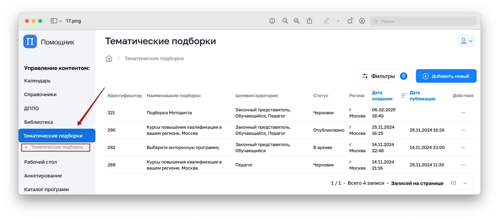

- В административной панели в меню слева выберите «Тематические подборки» — вкладка «Тематические подборки»
- Откроется таблица/список добавленных ранее подборок
Специально сформированные коллекции материалов по определённой теме, направлению или событию. Они помогают пользователям (ученикам, родителям и учителям) быстро находить актуальный и полезный контент, не тратя время на самостоятельный поиск.
Большинство подборок для пользователей создаются автоматически – на основе их индивидуальных интересов, активности и предпочтений в Системе.
Также администратор или методист может вручную создать подборку – выбрав подходящие материалы из разных разделов системы.